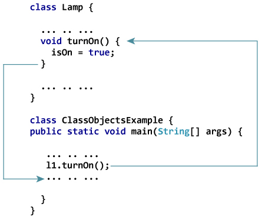

Objects And Classes Of Java
Java is an object-oriented programming (OOP) language. In this article, you'll be introduced to OOP and how you can create custom class and objects in your Java program.Java is an object-oriented programming language. It allows you to divide complex problems into smaller sets by creating objects.
These objects share two characteristics:
1.Lamp is an object
- It can be in on or off state
- You can turn on and turn off lamp (behavior).
2.Bicycle is an object
- It has current gear, two wheels, number of gear etc. states.
- It has braking, accelerating, changing gears etc. behavior.
Java Class
Before you create objects in Java, you need to define a class.A class is a blueprint for the object.
We can think of class as a sketch (prototype) of a house. It contains all the details about the floors, doors, windows etc. Based on these descriptions we build the house. House is the object.
Since, many houses can be made from the same description, we can create many objects from a class.
How to define a class in Java?
Here's how a class is defined in Java:
class ClassName {
// variables
// methods
}
|
Here's an example:
class Lamp {
// instance variable
private boolean isOn;
// method
public void turnOn() {
isOn = true;
}
// method
public void turnOff() {
isOn = false;
}
}
|
--@ Here, we defined a class named Lamp.
--@ The class has one instance variable (variable defined inside class) isOn and two methods turnOn() and turnOff(). These variables and methods defined within a class are called members of the class.
--@ Notice two keywords, private and public in the above program. These are access modifiers which will be discussed in detail in later chapters. For now, just remember:
--@ The private keyword makes instance variables and methods private which can be accessed only from inside the same class.
--@ The public keyword makes instance variables and methods public which can be accessed from outside of the class.
--@ In the above program, isOn variable is private whereas turnOn() and turnOff() methods are public.
--@ If you try to access private members from outside of the class, compiler throws error.
Java Objects
When class is defined, only the specification for the object is defined; no memory or storage is allocated.To access members defined within the class, you need to create objects. Let's create objects of Lamp class.
class Lamp {
boolean isOn;
void turnOn() {
isOn = true;
}
void turnOff() {
isOn = false;
}
}
class ClassObjectsExample {
public static void main(String[] args) {
Lamp l1 = new Lamp(); // create l1 object of Lamp class
Lamp l2 = new Lamp(); // create l2 object of Lamp class
}
}
|
How to access members?
You can access members (call methods and access instance variables) by using . operator. For example,l1.turnOn(); |
--@ This statement calls turnOn() method inside Lamp class for l1 object.
--@ We have mentioned word method quite a few times. You will learn about Java methods in detail in the next chapter. Here's what you need to know for now:
--@ When you call the method using the above statement, all statements within the body of turnOn() method are executed. Then, the control of program jumps back to the statement following l1.turnOn();

--@ Similarly, the instance variable can be accessed as:
l2.isOn = false; |
It is important to note that, the private members can be accessed only from inside the class. If the code l2.isOn = false; lies within the main() method (outside of the Lamp class), compiler will show error.
Example: Java Class and Objects
class Lamp {
boolean isOn;
void turnOn() {
isOn = true;
}
void turnOff() {
isOn = false;
}
void displayLightStatus() {
System.out.println("Light on? " + isOn);
}
}
class ClassObjectsExample {
public static void main(String[] args) {
Lamp l1 = new Lamp(), l2 = new Lamp();
l1.turnOn();
l2.turnOff();
l1.displayLightStatus();
l2.displayLightStatus();
}
}
|
When you run the program, the output will be:
Light on? true Light on? false |
In the above program,
--@ Note, variables defined within a class are called instance variable for a reason.
--@ When an object is initialized, it's called an instance.
--@ Each instance contains its own copy of these variables. For example, isOn variable for objects l1 and l2 are different.
« Previous Next »